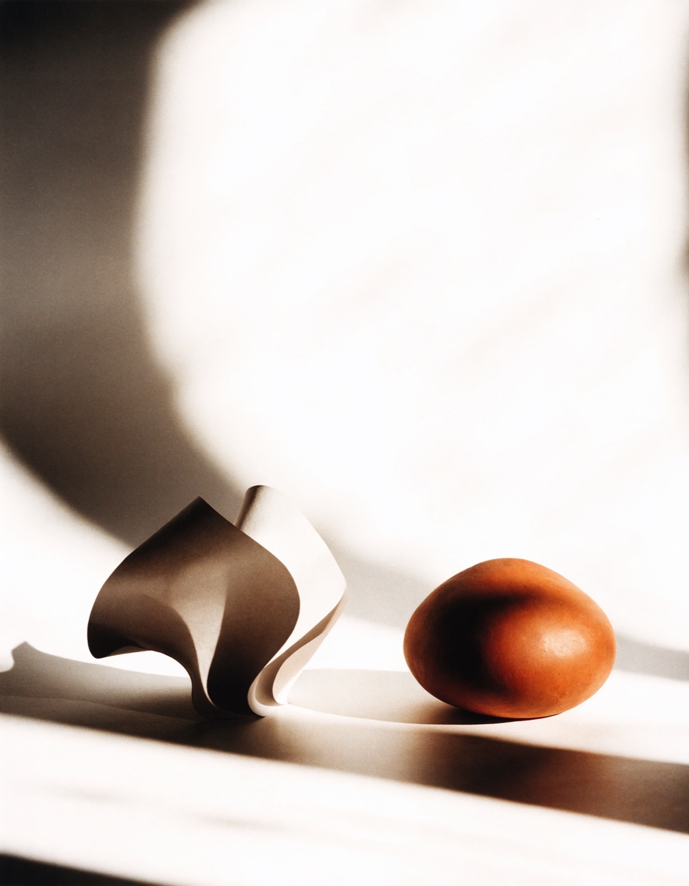
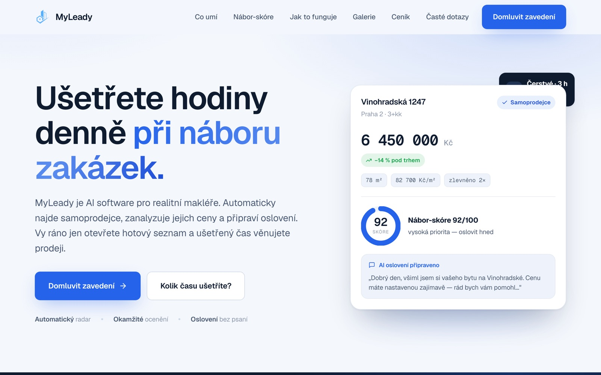
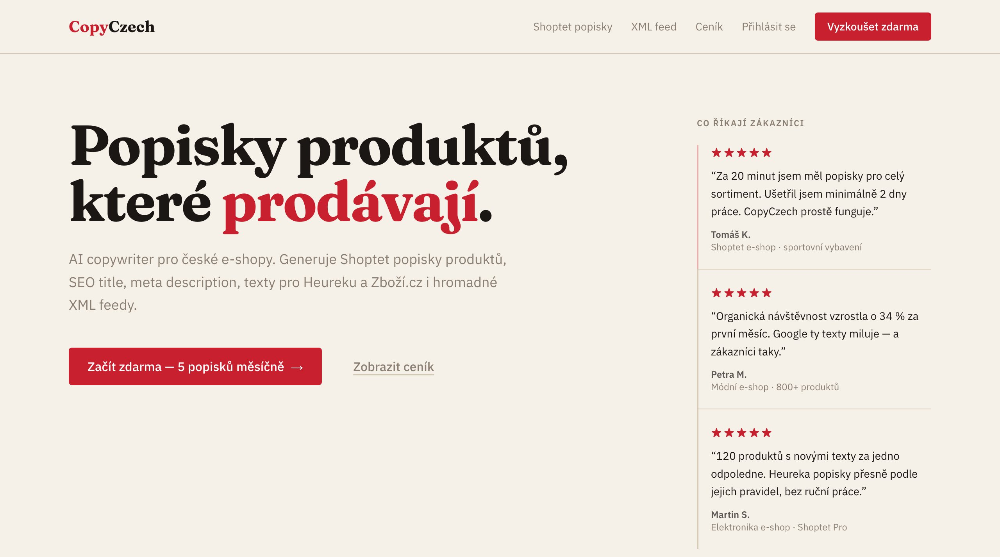
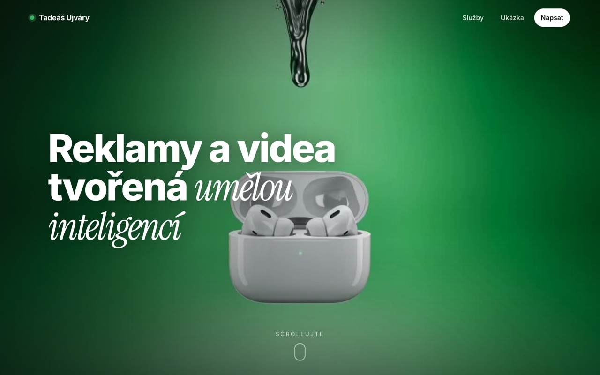

Weby na míru
Od firemní prezentace po složitější aplikaci. Návrh, kód i nasazení pod jednou střechou — rychlé, responzivní a postavené tak, aby vydržely a daly se rozšiřovat.
Jsem nezávislé studio jednoho člověka. Navrhuju a stavím rychlé weby na míru a propojuju je s automatizacemi, které za vás odbavují rutinu — od prvního dojmu až po poslední e-mail.

Jsem Tadeáš — vývojář a designér z Karlovarského kraje. Celý projekt vedu od prvního návrhu přes kód až po nasazení — bez předávání mezi lidmi a bez ztrát v komunikaci.
Nedělám šablony ani polovičatá řešení. Každý web stavím od základu na míru značce — rychlý, čistý a postavený tak, aby dával smysl i za dva roky.
Vedle webů firmám propojuju nástroje a automatizuju rutinu přes AI a n8n. Méně ručního klikání, víc času na práci, která reálně vydělává.
Od firemní prezentace po složitější aplikaci. Návrh, kód i nasazení pod jednou střechou — rychlé, responzivní a postavené tak, aby vydržely a daly se rozšiřovat.
Rozhraní, která vzbudí důvěru na první pohled a vedou návštěvníka přesně tam, kam má. Design, který prodává — ne jen zdobí.
Propojím formuláře, e-maily, CRM i AI do jednoho workflow, které běží samo. Rutina, kterou už nikdy nemusíte řešit ručně.
Moderní, prověřený stack. Žádné experimenty na váš účet — technologie, kterým rozumím a které vás nezradí v provozu.

Radar zakázek pro realitní makléře. Hlídá samoprodejce, ocení nemovitost vůči trhu a připraví oslovení — makléř má lead dřív než konkurence.

AI copywriter pro české e-shopy. Generuje prodejní popisky produktů, SEO texty i hromadné XML feedy pro Heureku a Zboží.cz.

Osobní studio pro reklamy a videa tvořená umělou inteligencí. Scroll-driven hero s liquid-metal reveal a reálné before/after ukázky produktových spotů.
Žádné šablony. Každý projekt stavím od základu podle vaší značky a cílů.
Weby laděné na výkon. Načtou se dřív, než návštěvník stihne ztratit zájem.
Vzhled, který vás postaví na úroveň větší konkurence — i s menším rozpočtem.
Web umím propojit s nástroji, které za vás odbavují rutinu na pozadí.
Měřím úspěch tím, co web firmě přinese — ne počtem animací na stránce.
Máte nápad, firmu k posunutí nebo web, který už neslouží? Napište mi — ozvu se do 24 hodin a probereme, co dává smysl.
taujvyk@gmail.com